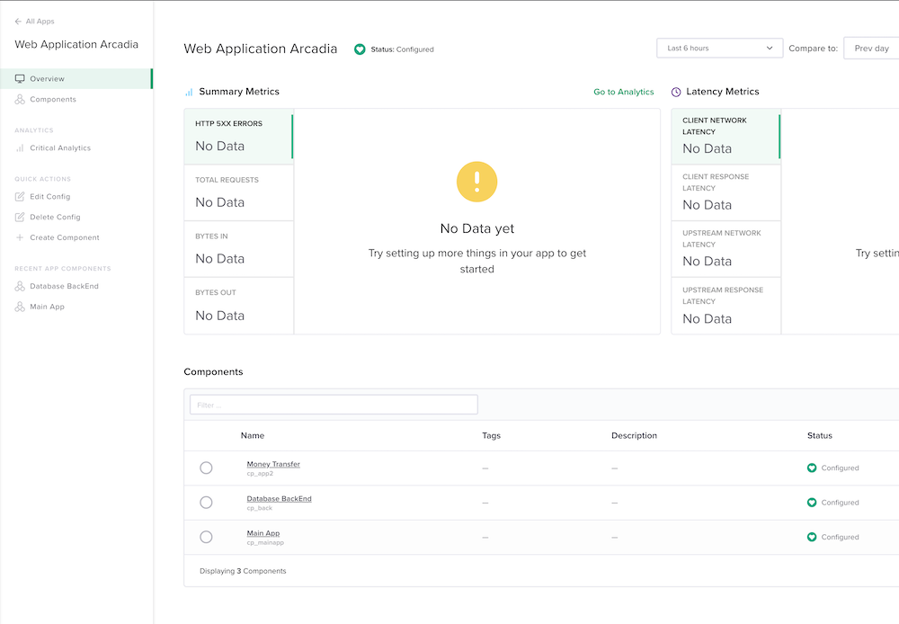

DevOps deploy Money Transfer application¶
In this module, we will deploy the Money Tranfer container for Arcadia Bank application and we will publish it.
Note
At the end of this module, Arcadia Bank application will look like this.
Note
In this lab, we will automate some tasks in the controller. As you noticed in the previous lab, it is long to create and you can make mistakes. We will deploy a new component with Postman
Step 1 - Deploy Arcadia App2 with a CI/CD pipeline like a DevOps¶
In Gitlab, click on Administrator / Arcadia-App2
- Click on file
deploy - Click
editand make a modification - like YES !!!!! - Click
Commit changes
Note
At this moment, you simulate a commit like a DevOps. This
commitwill trigger awebhooktoJenkins, so that Jenkins execute apipeline.- Click on file
In Jenkins, click on
DeployApp2pipelineA pipeline is running, click on it
You can follow the steps
Note
At this stage, App2 (Money Transfer app) is deployed un K8S. But you need to publish it via the controller.
Step 2 - Publish Money Transfer App with NGINX+ and Controller¶
In the
JumphostopenPostmanOpen collection
Deploy Component App2#. Send the first callLog in NGINX Controller#. Send the second callCreate App2 ComponentNote
with one click, you created the component. Fast and no human mistake.
Connect to Controller GUI and check the new component in
web application arcadiaalign: center Note
You can notice the new
Money TransfercomponentIn
Chromerefresh the page. You can see the new AppMoney TransferTransfer some money to your friends in order to populate analytics